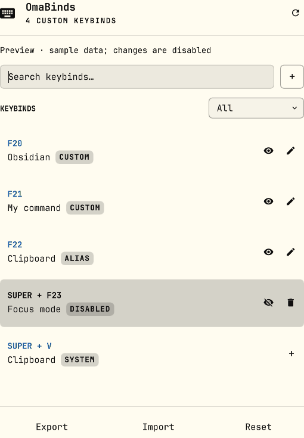

Captura tu combinación.
Pulsa la combinación o escribe nombres como F20, SUPER + V o XF86AudioPlay.
Un pequeño plugin para Omarchy Quattro
Crea, revisa y reutiliza atajos de Omarchy. Un panel nativo para aplicaciones, comandos y acciones que ya usas.
v1.1.0 Código abierto MIT

Nativo en tu escritorioPanel Quattro. Tu tema de Omarchy.
Cambios reversiblesValidación, backups y rollback.
Todo en tu equipoSin cuentas, daemon ni telemetría.
01 / Una configuración más clara
Una combinación.
Una acción verificable.
Pulsa la combinación o escribe nombres como F20, SUPER + V o XF86AudioPlay.
Busca una aplicación, añade un comando o reutiliza una acción de Omarchy, Hyprland o un alias Lua.
omabinds muestra los conflictos antes de escribir y restaura el estado anterior si la aplicación falla.
02 / Requisitos
El panel usa los componentes nativos y el registro de plugins de Omarchy Quattro.
QuattroLee los bindings Lua efectivos, detecta conflictos y valida la configuración antes de recargarla.
hyprland.luaRequiere una sesión Hyprland activa. No instala paquetes Python ni necesita privilegios de administrador.
sin daemonLos dos teclados disparan los mismos atajos: omabinds no diferencia dispositivos de entrada.
03 / Local por diseño
omabinds guarda sus mappings en tu configuración de usuario. No envía tus combinaciones, comandos o rutas a un servidor.
Leer la política de privacidad04 / Hazlo tuyo
Instala desde una sesión Hyprland activa, como tu usuario normal. Omarchy clonará y habilitará el plugin después de pedir confirmación.
Descargar v1.1.0# Añade el repositorio y habilita el widget.
omarchy plugin add https://github.com/pablousx/omabinds.git --enable# Abre omabinds desde el launcher
# o desde el icono de teclado.
En el primer inicio, si falta la integración local, omabinds muestra un setup bloqueante. Pulsa Open setup terminal, espera a que termine y después pulsa Refresh status.
05 / Antes de empezar
Aplicaciones descubiertas desde XDG, comandos, acciones de Omarchy o Hyprland y aliases que reutilizan las acciones Lua efectivas.
omabinds identifica la acción que ocupa la combinación antes de escribir. Puedes cancelar, cambiarla o elegir reemplazarla explícitamente.
Desactivar o eliminar un reemplazo restaura el binding original. Si una validación o recarga falla, omabinds recupera el estado anterior.
Sí. El plugin instalado usa componentes nativos de Quattro y el tema activo. Este sitio comparte las paletas Tokyo Night y Everforest de Omastart.
La desinstalación normal retira la integración, el launcher y el plugin, pero conserva mappings y backups. Usa --purge --yes únicamente si también quieres eliminarlos.
{kind=link}